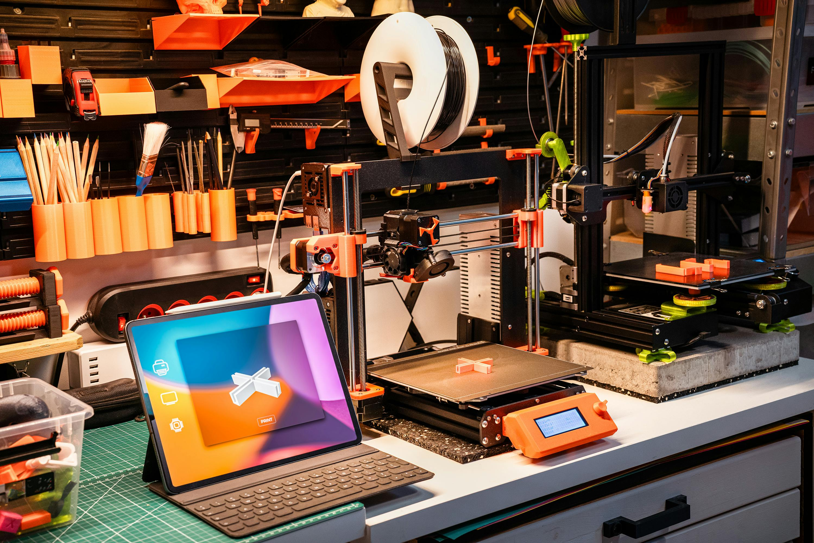

Welcome to My Page

I've been told that the intro to a website is like the welcome mat to your home, so I would like to take this time to thank you for visiting my website. As the name suggests this website is mainly all about my hobbies. Flying My Drone, Playing My Guitar, and Editing My family videos are some of my passions. As you scroll through my website you will be able to see how my hobbies have impacted my life and what they have meant to me. I also do hope you can enjoy the layout, color, and flow of my website as it did take a while to master a lot of these skills like Flexbox and Grid, while some I already knew about it was a fun and enjoyable journey to create this pleasantly appealing website. I would like to thank you for your time and I am always open to any feedback in the more section. please be kind as it is my first official website. Thank you!
Editing

Editing videos is more than just a task—it's a passion that fuels my creativity and drives me to perfect my craft. With each clip trimmed, transition smoothed, and color-corrected, I immerse myself in a world where storytelling comes to life The process of editing videos challenges me to think critically, problem-solve, and innovate to bring my vision to fruition. It's not just about cutting and pasting—it's about creating a seamless narrative that captivates viewers and evokes emotions. The ability to manipulate visuals and sound to convey a message is a powerful skill that I cherish. Every completed video is a testament to my dedication and growth in this art form. Editing videos isn't just a hobby; it's a love affair that ignites my soul and fuels my desire to keep pushing boundaries in the realm of visual storytelling.
Drones

Drones have become increasingly popular in recent years, and their uses are widespread. There are many types of drones and different applications, for them. Drones can be classified into two main categories: recreational and professional. Recreational drones are typically used for hobby purposes, such as aerial photography or racing. They are smaller in size and operate at lower altitudes. On the other hand, professional drones are larger and more advanced, often used for commercial purposes like agriculture, construction, and surveillance. The applications of drones are diverse and continue to expand. In agriculture, drones equipped with cameras and sensors can monitor crop health, and assess irrigation needs. In the public sector, drones are used for various purposes, including search and rescue missions, and disaster relief operations In conclusion, drones are versatile tools with a wide range of applications. They have the potential to revolutionize various industries.
Guitar

Guitars are more than just instruments to me; they are vessels of emotion and creativity. The moment I strum those strings, a wave of tranquility washes over me, connecting me to a deeper part of myself. Each chord, each note, tells a unique story, weaving together melodies that express what words cannot. The versatility of guitars amazes me - from the gentle whisper of a ballad to the roaring power of rock 'n' roll, they can evoke a myriad of emotions. The curves of the body, the smoothness of the fretboard, every detail speaks to me on a profound level. Through guitars, I find solace, passion, and a medium for self-expression. They are not just instruments; they are companions in my journey of self-discovery and creativity.
Editing
Editing videos is more than just a task—it's a passion that fuels my creativity and drives me to perfect my craft. With each clip trimmed, transition smoothed, and color-corrected, I immerse myself in a world where storytelling comes to life The process of editing videos challenges me to think critically, problem-solve, and innovate to bring my vision to fruition. It's not just about cutting and pasting—it's about creating a seamless narrative that captivates viewers and evokes emotions. The ability to manipulate visuals and sound to convey a message is a powerful skill that I cherish. Every completed video is a testament to my dedication and growth in this art form. Editing videos isn't just a hobby; it's a love affair that ignites my soul and fuels my desire to keep pushing boundaries in the realm of visual storytelling.